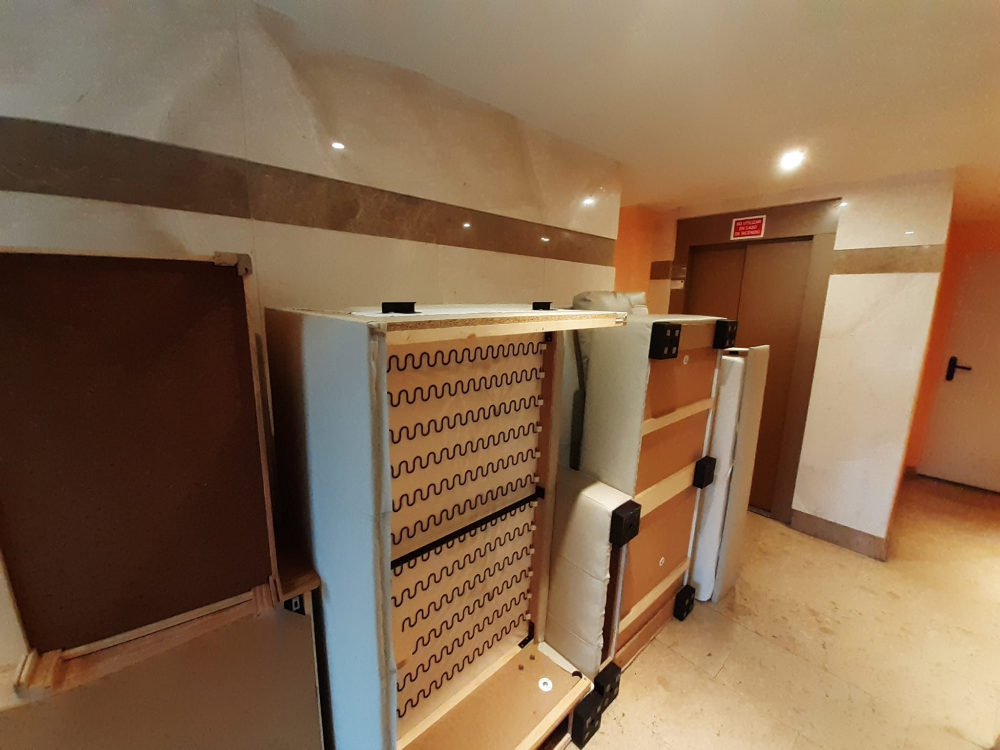

Llamadas, Correos y Mensajes Whatsapp
16 de dic:
Ahora bien, podemos presionar e insistir, pero a día de hoy no tenemos nada con lo que obligarlas. Me dirás que ellas tampoco lo tienen y sin embargo lo hacen. Efectivamente, tienes toda la razón en eso. ¿Por qué esa diferencia, en la que una parte, sin tener nada regulado ni establecido por Convenio ni sentencia, decide, y la otra, en este caso nosotros, tenemos que aguantar lo que ellas decidan? Pues la respuesta es difícil, porque carece de sentido y de argumentos, no puedo estar más de acuerdo en eso. Pero la realidad es que a día de hoy, a pesar de todos los avances normativos y en jurisprudencia respecto a custodia compartida, etc....aún sigue teniendo mucha ventaja la madre cuando se trata de situaciones en las que no hay nada regulado.
Si tú actuaras igual, o incluso decidieras por tu cuenta permanecer con la custodia de la niña y negarla todo derecho a verla, tendrías las de perder en un procedimiento judicial. Mientras que por su parte, su comportamiento nos sirve para argumentar su intransigencia y nula voluntad de acuerdo, pero seguramente no tendrá consecuencias prácticas. Esta situación es completamente injusta, lo sé, pero a día de hoy es la que aún se da.
Por eso, sí insisto en que es urgente inciar un procedimiento judicial que nos asegure que la custodia y/o régimen de visitas quedan reguladas, sea la forma en la que sea, para que desde ese momento no pueda hacer lo que quiera. Y si lo hace se podrá pedir la ejecución en el Juzgado.
En cuanto a las vacaciones de navidad, con este planteamiento que te comento, sí necesitaría confirmación para decirla a la abogada cuanto antes, para que no pongan ni una sola excusa sobre que se les dice con poco tiempo y cosas parecidas que siempre utilizan. Como te digo el reparto en sí es correcto, la cuestión es que el período elegido por ambos coincide y al no estar establecido en sentencia es complicado reclamarlo, hay que buscar puntos de acuerdo (pero ya sabes la forma de acordar que tienen ellas).
-Todo entendido. Muchas gracias por la explicación. Estoy de acuerdo en recogerla el día 23 de diciembre y la reintegro el día 29 de diciembre por la tarde, pero a cambio de recogerla nuevamente el día 5 de enero para que esa noche pernocte conmigo. Si no, ¿qué mensaje se le trasladará a la pequeña con respecto al papel que tiene su padre en su vida?
15 de dic:
Acaba de contestarme la abogada de Pilar. Bien, como imaginábamos, ponen objeciones, no al hecho de que el régimen en Navidad debe pasar a ser considerado extraordinario, pero sí al reparto. Como en la secuencia de fines de semana alternos el que te correspondería sería el del 26, me comenta que Pilar ya había hecho sus planes de cara al segundo período.
Lo que proponen es que la recojas el día 23 de diciembre y la reintegres el día 30 de diciembre por la tarde, y nuevamente la recojas el día 6 de enero a las 17.00 horas y la reintegres el 7 de enero.
En realidad la distribución me parece bien, es como te comentaba, un reparto proporcional de los tiempos en períodos vacacionales, respetando además el hecho de que puedas estar con la niña la tarde del Día de Reyes. El problema es que no coincide con las preferencias que teníamos, que eran justo al contrario (primer período para tí y el segundo para ella, lo que habría supuesto que la noche de Reyes estuviera contigo).
Pelearlo será complicado, aunque ya la he transmitido que, de nuevo, no se deja ningún margen a una negociación. Ella se escuda, como te digo, en que la secuencia que "toca" de fines de semana alternos era esta. Eso es verdad, la cuestión es que es la secuencia que toca lo es en un régimen ordinario, pero si damos por bueno, como así es, que pasamos a un régimen extraordinario que se reanudaría pasado el día de Reyes no es tan exacto como dicen, pues perfectamente se podría cambiar (si quisieran).
Por cierto, como alternativa me comentaba que, si por razones de organización preferías ver la posibilidad de pasar algunos dias a partir del día 6 de enero en adelante (hasta el día 10 aproximadamente), no tendría problema, ajustando (es decir, quitando), algunos días del primer período de nochebuena que te proponen. A esta propuesta en principio ni he contestado, salvo que tú me digas lo contrario porque, por cuestiones de vacaciones en el trabajo, por ejemplo, te interese, en cuyo caso sí respondería.
4 de dic:
Si damos por bueno que en Navidad el régimen debe ser extraordinario, se peude perfectamente pactar lo que dices. Si ellas se acogen a que al no haber nada regulado aún, se debe seguir con un régimen ordinario, seguro que dirán (lo veo venir) que el fin de semana del 31 no te correspondería, sino el anterior. Veremos a ver. Yo aún no la había transmitido nada porque antes quería hablar contigo y que me confirmaras. Así que de acuerdo, se lo comento y vamos a ver cuál es su actitud.
Queda pendiente que me comentes el tema de la propietaria y esa propuesta que me decías que te había hecho.
Por otro lado, confirmame también si lo que me decía la abogada es cierto y el Libro de Familia no aparece. Si fuera así, sí es conveniente que se solicite uno, y para ello habría que coordinarse porque debéis acudir los dos.
Todo entendido. Teniendo en cuenta lo que me comentas del régimen extraordinario, me gustaría entonces estar con la pequeña desde el día 31 hasta el día de Reyes, para que la noche de Reyes la pasase conmigo; si es posible y sólo en caso de que no le hayas transmitido la petición anterior (no es en absoluto mi intención complicar la negociación).
Por mi parte, no tengo inconveniente en hacerme cargo otros días adicionales, y no sólo las fechas señaladas, pero necesito saber los días de antemano porque estoy acordando mis vacaciones en el trabajo. Y estoy de acuerdo en que el día de Reyes Emma pueda estar con los dos progenitores.
En cuanto a las Navidades, en efecto según el régimen de isitas que ellas mismas han propuesto (e impuesto, dicho sea de paso), te correspondería a tí en Nochebuena. Ahora bien, es cierto que en períodos vacacionales se suele interrumpir el régimen ordinario y pasar a lo que se denomina "régimen extraordinario", en el que se puede pactar algo diferente. Lo normal sería que se dividiera en dos períodos, correspondiendo a uno de los progenitores la primera parte de las fiestas, hasta el 31 de diciembre, y de ahí en adelante al otro progenitor, reanudándose el régimen "ordinario" después del día de Reyes (o en su defecto cuando se vuelva a la actividad lectiva).
Ahora bien, como aquí no hay por ahora nada regulado, habrá que intentar negociar nuevamente y ver con qué nos encontramos. Por mi parte, y para que no digan que no se las avisa con tiempo, voy a proponer ya mismo que proponemos que la pequeña esté contigo en Nochebuena. Queda que me digas si también podrías hacerte cargo de ella el resto de días, para poder proponerles que toda la primera parte estés con ella, no solo los días concretos de Nochebuena y Navidad.
El día de Reyes es un poco más complejo. Por lo general corresponde al progenitor en cuya compañía está el menor en ese momento (según la propuesta que las haríamos, en este caso estaría con la madre). Ahora bien, aunque hay algunos Jueces a los que no les gusta, yo soy partidario de pactar que el progenitor, padre o madre, que no pueda estar con el menor ese día, disponga al menos de dos horas por la tarde para poder llevarle sus regalos y disfrutar un rato de su compañía. La otra opción es, como te digo, no pactar nada y que solo esté con uno de los padres, y al año siguente se haría al revés, de manera que la primera parte de las fiestas navideñas estaría con la madre, siguiendo nuestro ejemplo, y la segunda contigo. Pero en mi opinión el día de Reyes es especial tanto para los padres como para los menores, por lo que lo más justo para ambos, a mi entender, es que al menor pueda disfrutar un rato del progenitor no custodio en ese momento. Por otro lado, aprovecho para comentarte que he recibido correo de la abogada de Pilar comentandome dos puntos:
De nuevo, pide retomar el reparto de los enseres que restan
El libro de Familia, del cual comenta que tú le has dicho a Pilar que tampoco lo tienes y que, por ello, hay que pedir un duplicado, para lo que debéis coordinaros los dos. Respecto a este punto la voy a "recordar" que también sigues a la espera del libro de vacunación.
Mañana de todos modos hablamos cuando tengas un hueco y comentamos todos estos puntos, además del tema que me comentas de la propietaria.
Parece que a mediados de este mes mi empresa me va a dar más información acerca de la continuación del teletrabajo o la vuelta a la presencialidad. Te mantengo informado.
Hay un par de asuntos que me gustaría tratar de cara a las navidades. En primer lugar quería saber cuál era la práctica habitual el día de Reyes con respecto a la visita de los menores. Y en segundo lugar también me gustaría proponer estar con la pequeña en Nochebuena ya que, según el turno de visitas que han impuesto me tocaría el fin de semana del 26, por lo que parece mejor para Emma (y menos trastorno para ella) que entonces sean los días 24 y 25 los que pasase conmigo (y el 31 con la madre si así lo quiere).
Por otro lado, también me gustaría consultarte la nueva propuesta que ha hecho la propietaria de la vivienda con respecto al alquiler.
27 de nov:
Por ahora es mejor eso que nada, también es cierto, no solo, como te decía, para que puedas estar con la pequeña, sino porque veo venir la estrategia y van a intentar alegar que no has querido saber nada de ella, lo cual sabemso que es falso, pero mejor poner todo de nuestra parte para no darlas esa posibilidad.
¿Sólo 24 horas, después de un mes sin poder estar con la pequeña? No estoy en absoluto de acuerdo. Pero accedo, porque incluso pueden argumentar que me desentiendo. Aunque es el papel al que se me ha relegado.
Dicen que ok, mañana sábado a las 11:00 horas hasta el domingo a las 12:00 horas. Además del día entre semana, discutirían el viernes como día del fin de semana en el que empezar. Esto ya te adelanto que será muy difícil que un juez lo dé por bueno, lo lógico es que el fin de semana de visita, si es que fuera esa la medida que se adoptara (caso hipotético) sería desde el viernes.
No entiendo. ¿Pero su propuesta no era fines de semana alternos, empezando por el del día 14 que dieron por supuesto que aceptábamos (aunque la situación que generaron era demasiado violenta para la pequeña)? Por la misma razón, se da por supuesto este fin de semana, ¿o cuál es la diferencia?
Es decir: rechazan mi propuesta sin argumentos, yo acepto su propuesta que va contraria a la mía, ¿y aún así ponen nuevas trabas? Por favor, déjales esto claro y 'en negro sobre blanco' para el caso de que tengamos que rebatirlo en un futuro. Además, quien se negaría en este caso serían ellas; no entiendo que acumulen trabas, problemas y dilataciones y aún así puedan argumentar que soy yo quien me he desentendido.
24 de nov:
Hola Angel. Se lo transmito a su abogada. Si pide también tiene que dar. En cuanto a las visitas, decirte que insisten en que sea miércoles con pernocta hasta el jueves, no admiten otro. Con fines de semana alternos (este próximo te correspondería a ti). De momento creo que es bueno que la veas, porque si no argumentaran que no te has preocupado de ver a la niña. De todos modos les he vuelto a decir que no es eso lo que queremos acordar, su hay alguna novedad te digo, pero de momento no hay OK para ir a por ella el jueves. Debemos agilizar la demanda, acuérdate, por favor, de buscar contrato y nóminas que te comenté
Buenos días Carlos. Pilar me pide el libro de familia. Hay cosas pendientes de devolver por su parte: llaves de vivienda y coche, libreta de pediatra y lo más importante, ver a la pequeña esta semana. Por favor, evitemos que pase lo del día 14. Gracias
21 de nov:
En todo caso, además de esos días entre semana, el fin de semana también habría que tener una regularidad, como mínimo de fines de semanas alternos, para que puedas ir aumentando las estancias con la niña, tanto entre semana como en fin de semana. Yo también le transmitiría esto, si a tí te parece bien, para que el próximo sábado también pudieras recogerla.
17 de nov:
De cara a próximos pasos, para una orden de alejamiento necesitaríamos algo penalmente de más enjundia, de lo contrario no nos la concederían. Solo lo hacen en casos claros de maltrato o amenazas, habría que ver posibles acciones futuras para poder pedirlas.
En cuanto al Punto de Encuentro, es algo que es una posibilidad, claro está, y si lo solicitamos es muy posible que lo concedan. Hay una cuestión, sin embargo, que debemos valorar en este aspecto, y es que eso choca un poco con la opción de solicitar una guarda y custodia compartida. Uno de los requisitos (aunque es matizable y la jurisprudencia va cambiando poco a poco esa tendencia) es que la relación de los progenitres sea lo más cordial posible, para considerar que la custodia compartida podrá llevarse a cabo sin incidencias para la menor. Y el hecho de pedir la entrega y recogida en un P.E.F. , lógicamente, deja claro que esa relación es todo menos cordial.
En cuanto al contrato de arrendamiento, lo cierto es que habría que regularizarlo, efectivamente, sobre todo por ella, por eso no entiendo por qué motivo finalmente no firmó el documento que llevaba la propietaria. Imagino que quiso "guardarse" la carta de poder entrar en la vivienda cuando quiera, pero lo cierto es que ya se lo comunicó, al margen del documento que tienes tú firmado por ella en el que reconoce que no vive allí desde el mes de Julio. Se podría valorar, en efecto, reclamarle los gastos desde esa fecha. Por tu parte, ya comunicaste formalmente a la propietaria tu intención de seguir viviendo allí. E insisto en lo que te comenté, que también la dije a ella, no es necesario para nada firmar un nuevo contrato (y menos si su idea es cambiar alguna de las condiciones, como aumentar la renta mensual).
Estoy empezando a preparar la demanda, pero para ello sí necesitaría que me enviaras:
Contrato de trabajo tuyo y 3 últimas nóminas
Última Declaración de la Renta
Datos de la empresa en la que trabaja Pilar
Dirección de la Guardería a la que asiste a la niña y horarios de entrada y salida
El seguro médico y dental privado que comentas
Debes solictar también el certificado literal de nacimiento de Emma.
Recuerda hacer al menos ingresos de 150-200€ que ponga en concepto "Pensión de alimentos", porque si no ellas lo van a utilizar para argumentar que no te has ocupado del bienestar de la niña. ve archivando todos esos ingresos o transferencias.
Temas a tratar:
Visitas puntuales
Nuestra propuesta:
Días de diario
Punto de encuentro
Tiempo de respuesta - recordar que yo estoy en proceso de mudanza
Contramedidas económicas
Argumentar: distancia casa-guardería, alquiler, guardería, entorno
Antes de la transferencia, yo tengo una cuenta donde reservaba cada mes.
Justificante de flexibilidad horaria. De cara al juzgado: de que estoy teletrabajando, enfermedad. Disponibilidad laboral y flexibilidad horaria:
Tipo de trabajo -por plazos, no por horario
No es un trabajo de soporte con rigidez
Ya ha ocurrido
¿Presencialidad a la vista?
Calendario de visitas temporal
Demanda económica:compensación, coacción, medidas cautelares
ENSERES:
Te comparto las fotos de los enseres, a las 12:00:
Únicamente se van a dejar las cosas el sábado si antes me hacen llegar las llaves de la vivienda y del coche (y compromiso de no haber hecho copias), esto lo acordamos pero no las han hecho llegar aún. No puede haber un acuerdo si no cumplen su parte. Quizás deberíamos firmar un contrato.
Estas son las cosas de la hermana de Pilar, son las que voy a dejar en el rellano del ascensor, el resto no están o no son suyas (estoy localizando algunas facturas pero resultará imposible de todo):
· SOFA (CHESLONG)
· 2 COMODAS DE MADERA PINO
· APARADOR ROJO
· BAUL MADERA PINO
· CUADRO MINI (olvidado por la tensión que generó)
· LAMPARA CUARTO EMMA
· BOLSA PAÑALES
Hola Angel. He hablado con la abogada. Me dice que no sabe lo que ha hablado Pilar con la propietaria,que ella no ha intervenido para nada en eso. Me ha asegurado que va a hablar con Pilar de nuevo para que le cuente y pedirla que hable con la propietaria para que no acuda mañana. Y en cuanto a los bienes, que de acuerdo. Los recogerán y ya está. Eso es lo que me ha asegurado, otra cosa, es saber si Pilar la va a hacer caso o no.
Ah, por cierto. En teoría el fin de semana estarías con Emma. Sin perjuicio de que no sea el régimen que vamos a exigir, sí creo que sería bueno que fueras a por ella. Lo primero, lógicamente para que estés con tu hija, y segundo para que ellas no utilicen el argumento de que nos han "ofrecido" esas visitas y no has querido ir. Ya digo, independientemente de que no será eso lo que solicitemos en la demanda que preparamos desde ya.
De acuerdo, luego hablamos. Pero creo que no sería bueno para la pequeña estar con su padre en una vivienda que se puede violentar y vulnerar por la madre o cualquier persona que ella quiera. Pido respuesta inmediata de su abogada a nuestra propuesta. Luego hablamos. Un saludo
Buenos días Carlos. No, OK al sábado no. Antes deben hacerme llegar las llaves de la vivienda, del coche y compromiso escrito de no haber hecho copias. No se me ocurre otra manera para estar seguro en mi casa. Luego hablamos entonces. Gracias. Un saludo
Pendiente
Condiciones
Argumentaciones
Pendiente por su parte
Documentación a recopilar
Documentación a recopilar: hecho